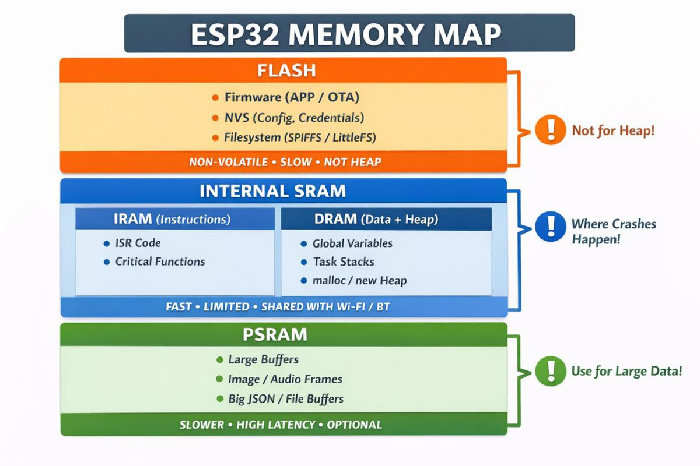
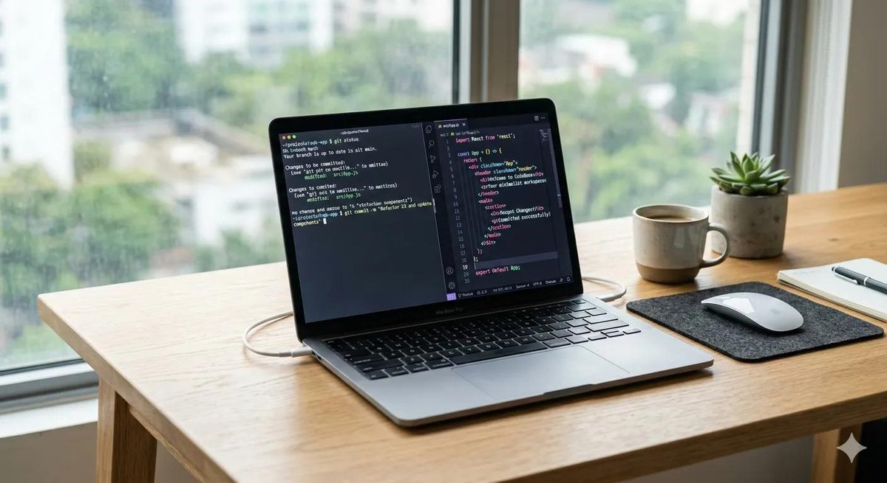
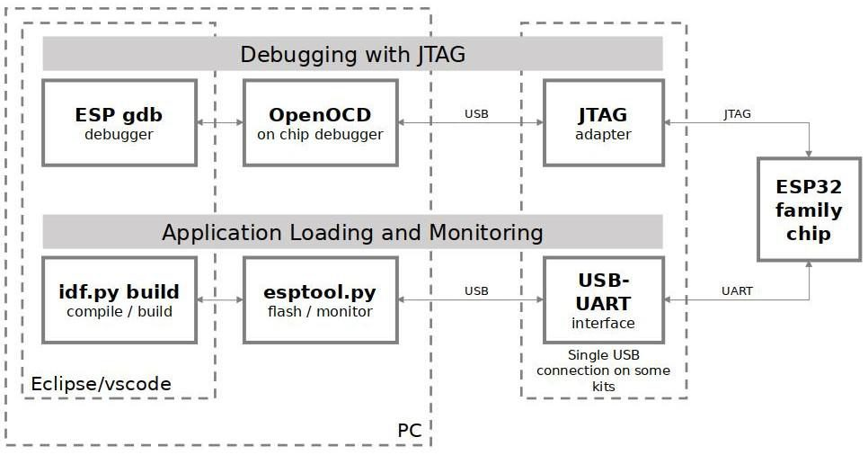

第十课：ESP-IDF 工程构建、编译器、链接器与底层调试
前面九课，我们已经从 ESP32-S3 芯片架构，一直学习到了 Bootloader、Flash 分区、OTA 和固件安全。
现在进入嵌入式软件开发最重要的底层知识之一：
你编写的 C 代码，究竟是如何变成 ESP32-S3 能够执行的机器指令的？
这节课将帮助你理解：
- C 语言如何变成机器代码。
- GCC 编译器如何工作。
- Xtensa LX7 指令集是什么。
- CMake 和 ESP-IDF 如何组织工程。
- 链接器如何分配程序内存。
- ELF、BIN 和 MAP 文件的关系。
- IRAM、DRAM、Flash 和 PSRAM 如何分配。
- 如何使用 GDB、OpenOCD 调试 XIAO ESP32S3。
一、从 C 代码到机器指令
先看一个最简单的程序：
#include <stdio.h>
int main(void)
{
int a = 10;
int b = 20;
int c = a + b;
printf("Result: %d\n", c);
return 0;
}你写的是 C 语言，但 ESP32-S3 并不能直接理解 int a = 10 这样的语句。
它只能执行 CPU 指令。
因此必须经过编译流程。
C 语言编译全过程
这里有一个重要区别：
- Compiler 负责把 C 语言转换为目标代码。
- Assembler 负责生成目标文件。
- Linker 负责把多个目标文件组合起来，解决函数和变量的地址。
二、预处理器：C 语言真正编译之前发生了什么？
我们经常写：
#include "driver/gpio.h"
#define LED_GPIO 21
#ifdef CONFIG_FREERTOS_UNICORE
#define SINGLE_CORE 1
#endif这些内容并不是 CPU 指令。
它们属于 C 预处理器的工作范围。
1. 头文件展开
例如：
#include <stdio.h>预处理器会把对应头文件中的声明展开到源代码中。
2. 宏替换
#define LED_GPIO 21
gpio_set_level(LED_GPIO, 1);预处理之后相当于：
gpio_set_level(21, 1);3. 条件编译
#ifdef CONFIG_IDF_TARGET_ESP32S3
printf("ESP32-S3\n");
#endif只有条件成立时，这段代码才会进入后续编译过程。
这也是为什么 ESP-IDF 的 sdkconfig 非常重要。
它决定了很多功能是否真正进入最终固件。
4. 实际实验
在 ESP-IDF 工程目录执行：
idf.py preprocess如果当前 ESP-IDF 版本或工程组件不支持这个快捷目标，可以使用实际编译命令中的 -E 参数对单个 C 文件执行预处理。
例如：
xtensa-esp32s3-elf-gcc \
-E main/main.c \
-I main \
-o main.i注意：真实 ESP-IDF 工程还有大量自动生成的头文件和编译宏，直接运行上面的简化命令可能找不到完整依赖。初学阶段更推荐从 build/compile_commands.json 中复制真实编译命令。
三、GCC：ESP32-S3 的编译器
ESP32-S3 使用 Xtensa LX7 处理器。
因此不能使用普通电脑上的 x86 GCC 来直接编译 ESP32-S3 固件。
需要使用对应的交叉编译工具链。
常见工具：
xtensa-esp32s3-elf-gcc
xtensa-esp32s3-elf-g++
xtensa-esp32s3-elf-as
xtensa-esp32s3-elf-ld
xtensa-esp32s3-elf-objdump
xtensa-esp32s3-elf-objcopy
xtensa-esp32s3-elf-size1. 什么叫交叉编译？
你的 Mac 使用 Apple Silicon 处理器。
但是 XIAO ESP32S3 使用 Xtensa LX7。
因此：
Mac
↓
交叉编译工具链
↓
Xtensa 机器指令
↓
ESP32-S3编译器运行在 Mac 上，生成的程序却运行在 ESP32-S3 上。
这就叫交叉编译。
2. 查看工具链版本
打开 Mac 终端：
xtensa-esp32s3-elf-gcc --version如果没有找到命令，先加载 ESP-IDF 环境：
. $HOME/esp/esp-idf/export.sh如果你的 ESP-IDF 安装在其他位置，应替换成真实路径。
然后执行：
which xtensa-esp32s3-elf-gcc3. 编译器优化
GCC 常见优化级别：
| 参数 | 含义 | 使用场景 |
|---|---|---|
-O0 | 不优化 | 调试 |
-O1 | 基础优化 | 普通开发 |
-O2 | 较高优化 | 性能开发 |
-Os | 优先减小体积 | Flash 空间紧张 |
-Og | 兼顾调试体验 | 开发调试 |
例如：
xtensa-esp32s3-elf-gcc -O0与：
xtensa-esp32s3-elf-gcc -O2生成的机器代码可能差异很大。
注意，优化后变量可能被消除、合并或放入寄存器，调试时看到的变量值和源码行不一定一一对应。
四、Xtensa LX7：CPU 究竟执行什么指令？
这是本课非常重要的知识。
C 语言只是人类编写程序的语言。
真正被 ESP32-S3 执行的是 Xtensa 指令集。
例如：
int a = 10;
int b = 20;
int c = a + b;编译器可能生成类似这样的汇编：
movi a2, 10
movi a3, 20
add a4, a2, a3这里：
movi：将立即数加载到寄存器；add：执行加法；a2、a3、a4：寄存器。
这是概念示例，实际汇编会受到优化、ABI 和寄存器分配影响。
1. 查看真实汇编
假设已经编译了工程：
xtensa-esp32s3-elf-objdump \
-d build/你的工程名.elf可以查看整个程序的反汇编。
只看某个函数：
xtensa-esp32s3-elf-objdump \
-d \
--disassemble=app_main \
build/你的工程名.elf这样你就可以观察：
C 语言
↓
编译器优化
↓
Xtensa 汇编
↓
机器指令2. 为什么要学汇编？
你不需要一开始就精通 Xtensa 汇编。
但需要具备以下能力：
- 识别函数调用；
- 识别寄存器操作；
- 理解栈帧；
- 理解跳转指令；
- 分析异常回溯；
- 判断编译器是否优化掉了某段代码。
这对分析 ESP32-S3 崩溃问题特别有帮助。
五、CMake：ESP-IDF 为什么使用 CMake？
前面我们学习了编译器，现在看看工程如何组织。
假设你的项目有：
main.c
gpio.c
wifi.c
mqtt.c如果每次都手动编译所有文件，会非常麻烦。
CMake 的作用就是管理：
- 源代码；
- 头文件；
- 组件依赖；
- 编译参数；
- 链接库；
- 构建目标。
ESP-IDF 使用 CMake 构建系统。
1. ESP-IDF 项目结构
my_xiao_project/
│
├── CMakeLists.txt
│
├── sdkconfig
│
├── sdkconfig.defaults
│
├── main/
│ ├── CMakeLists.txt
│ ├── main.c
│ ├── gpio.c
│ └── wifi.c
│
├── components/
│ ├── xiao_bsp/
│ └── mqtt_manager/
│
└── build/2. 根目录 CMakeLists.txt
cmake_minimum_required(VERSION 3.16)
include($ENV{IDF_PATH}/tools/cmake/project.cmake)
project(xiao_esp32s3_demo)3. main/CMakeLists.txt
idf_component_register(
SRCS
"main.c"
"gpio.c"
"wifi.c"
INCLUDE_DIRS
"."
REQUIRES
driver
esp_wifi
esp_event
esp_netif
)这里：
SRCS是源文件；INCLUDE_DIRS是头文件目录；REQUIRES是组件依赖。
注意，ESP-IDF 不同版本对组件依赖名称和驱动 API 可能有所调整，实际工程应按当前版本的组件注册规则核对。
4. CMake 如何实现组件管理？
例如：
main
↓
依赖 xiao_bsp
↓
依赖 driver
↓
依赖 esp_wifi
↓
依赖 mqttCMake 根据依赖关系构建组件。
这意味着你不需要每个项目都复制一遍底层驱动代码。
这也是为什么建立统一 BSP 非常有价值。
六、Linker：链接器如何决定程序放在哪里？
这是理解 ESP32-S3 内存结构的关键。
假设你的程序有三个文件：
main.c
gpio.c
wifi.c编译后得到：
main.o
gpio.o
wifi.o每个 .o 文件都包含自己的机器代码和符号信息。
但是这些代码还没有确定最终的运行地址。
链接器负责把它们组织起来。
1. 链接器主要完成什么？
- 合并多个目标文件；
- 解析函数调用；
- 解析全局变量；
- 分配程序段地址；
- 处理静态库依赖；
- 生成最终 ELF 文件。
例如：
// gpio.c
void led_on(void)
{
// LED 控制
}// main.c
void led_on(void);
void app_main(void)
{
led_on();
}编译 main.c 时，编译器知道存在 led_on() 这个函数，但不知道它最终位于哪里。
链接器会找到 gpio.o 中的 led_on()，并处理函数调用地址。
这就是符号解析。
2. 什么是 Linker Script？
Linker Script 中文叫链接脚本。
它告诉链接器：
- 哪些代码放在 Flash；
- 哪些代码放在 IRAM；
- 哪些变量放在 DRAM；
- 哪些数据需要初始化；
- 哪些内存区域可以使用。
ESP-IDF 会根据目标芯片、配置和组件生成相应的链接布局。
你不需要一开始手写链接脚本，但必须理解它。
3. ESP32-S3 的主要内存区域

| 内存 | 主要用途 |
|---|---|
| Flash 映射区 | 程序代码和只读数据 |
| IRAM | 可在指令 RAM 中执行的代码 |
| DRAM | 内部数据和变量 |
| RTC FAST Memory | 低功耗相关数据和代码 |
| RTC SLOW Memory | RTC 低功耗数据 |
| PSRAM | 大型数据缓存和图像缓冲 |
特别注意：
ESP32-S3 的内存系统比较复杂，内部 SRAM 可以根据芯片和系统配置在不同用途之间分配，并不是所有内存区域都能任意使用。
4. IRAM 与 DRAM 有什么区别？
IRAM 是 Instruction RAM，主要用于执行代码。
DRAM 是 Data RAM，主要用于保存数据。
例如：
void normal_function(void)
{
printf("Hello\n");
}通常代码可能位于 Flash 映射区域。
如果需要在特定中断场景下执行 IRAM 安全代码，可以使用：
void IRAM_ATTR my_isr_handler(void *arg)
{
// 中断处理
}IRAM_ATTR 的作用是把函数放入适合执行的 IRAM 段。
但是有一个重要问题：
仅仅给中断函数加上 IRAM_ATTR，并不代表整个中断处理链都是安全的。
还必须检查：
- 中断调用的其他函数；
- 访问的全局数据；
- 常量是否位于 Flash；
- 使用的 API 是否允许在该中断上下文执行。
这在 Flash Cache 暂时不可用的场景中尤其重要。
七、RAM、Flash、PSRAM 的实际分配
现在通过一个例子理解内存分配。
#include <stdint.h>
int global_counter = 100;
const char message[] = "XIAO ESP32S3";
static int sensor_data[100];
void app_main(void)
{
int local_value = 10;
static int persistent_runtime = 0;
uint8_t *buffer = malloc(1024);
persistent_runtime++;
if (buffer != NULL) {
buffer[0] = 0xAA;
free(buffer);
}
printf("%d\n", local_value);
}这些变量并不是都放在同一个地方。
| 对象 | 通常存放位置 |
|---|---|
global_counter | DRAM，已初始化数据段 |
message | Flash 映射只读数据区域，具体取决于链接配置 |
sensor_data | DRAM，BSS 段 |
local_value | 通常在寄存器或任务栈 |
persistent_runtime | DRAM，静态存储区 |
buffer 指针 | 栈或寄存器 |
malloc 分配的内存 | 堆，具体区域取决于内存分配器 |
这里有几个重要概念。
1. Data Segment
保存已经初始化的全局变量和静态变量。
例如：
int value = 100;2. BSS Segment
保存未初始化或初始化为零的全局变量和静态变量。
例如：
static int buffer[1024];程序启动时，BSS 会按照运行环境的要求初始化为零。
3. Stack
保存函数调用相关数据。
例如：
void test(void)
{
int a = 10;
int b = 20;
}局部变量可能位于任务栈，也可能被编译器放入寄存器。
4. Heap
动态申请内存。
例如：
void *ptr = malloc(1024);
if (ptr != NULL) {
free(ptr);
}适合生命周期不确定的数据，但频繁申请和释放不同大小的内存可能导致内存碎片。
5. PSRAM 如何使用？
如果 XIAO ESP32S3 的 PSRAM 已经被正确识别和初始化，可以使用 ESP-IDF 的能力分配适合的内存：
#include "esp_heap_caps.h"
void *image_buffer = heap_caps_malloc(
1024 * 1024,
MALLOC_CAP_SPIRAM | MALLOC_CAP_8BIT
);
if (image_buffer != NULL) {
// 图像数据处理
heap_caps_free(image_buffer);
}这适合大型图像、音频和数据缓存。
但是 DMA 缓冲区不能简单地认为只要分配到 PSRAM 就一定可用。
某些 DMA 外设对内存区域、对齐和缓存一致性有要求，需要根据对应驱动的要求选择内部 DMA-capable 内存或受支持的外部内存方案。
八、MAP 文件：如何知道程序到底占用了多少内存？
这项技能对你以后使用 Codex 开发很重要。
假设某个 GitHub 项目使用了大量组件。
你想知道：
- 哪个组件占用 Flash 最大？
- 哪些函数占用 IRAM？
- 为什么固件突然变大？
- 哪些全局变量占用大量 DRAM？
可以使用 MAP 文件。
1. MAP 文件是什么？
MAP 文件是链接器生成的内存布局报告。
它记录：
- 目标文件；
- 函数地址；
- 数据段地址；
- 静态变量；
- 符号；
- 组件内存占用。
2. 查看 MAP 文件
在工程编译后：
find build -name "*.map"然后使用文本编辑器打开。
也可以搜索：
grep -n "app_main" build/*.map具体 MAP 文件名称和位置取决于工程配置。
3. 使用 ESP-IDF 内存分析工具
执行：
idf.py sizeidf.py size-componentsidf.py size-files这三个命令非常值得掌握。
例如：
| 组件 | Flash 占用 |
|---|---|
| Wi-Fi | 320 KB |
| TLS | 240 KB |
| MQTT | 80 KB |
| 应用程序 | 180 KB |
| 其他 | 100 KB |
如果发现 TLS 占用较大，就可以进一步研究是否启用了不需要的密码套件或组件。
如果发现某个组件大量占用 IRAM，就可以分析其代码段和中断安全要求。
九、GDB：如何单步调试 ESP32-S3？
前面我们学习了编译和链接，现在开始真正调试。
GDB 是 GNU Debugger。
它可以帮助你：
- 设置断点；
- 单步执行；
- 查看变量；
- 查看寄存器；
- 查看调用栈；
- 分析程序崩溃。
1. 调试需要哪些东西？


2. ESP32-S3 支持什么调试接口？
主要包括：
- JTAG；
- USB Serial/JTAG；
- 外部 JTAG 调试器。
XIAO ESP32S3 具有原生 USB 功能，但要注意 USB CDC 串口与 USB Serial/JTAG 调试功能不是完全相同的概念。
具体使用哪种方式，要根据板卡 USB 接线、芯片配置和当前运行固件确定。
3. 启动 OpenOCD
在 ESP-IDF 环境中可以使用：
openocd \
-f board/esp32s3-builtin.cfg这是内置 USB Serial/JTAG 调试接口的常见配置示例。
实际使用前需要确认当前 OpenOCD 版本支持该配置，并确认开发板 USB 连接和调试功能已启用。
4. 启动 GDB
另开一个终端：
xtensa-esp32s3-elf-gdb \
build/你的工程名.elf进入 GDB 后：
target remote :3333设置断点：
break app_main继续执行：
continue单步执行：
step查看变量：
print variable_name查看寄存器：
info registers查看调用栈：
backtrace这样就可以真正观察程序在 ESP32-S3 上的运行过程。
十、OpenOCD：GDB 如何与 ESP32-S3 通信？
GDB 负责调试命令，但它本身并不直接控制 ESP32-S3 的 JTAG 硬件。
中间需要 OpenOCD。
OpenOCD 是 Open On-Chip Debugger。
它的主要工作是：
- 连接调试接口；
- 识别目标芯片；
- 控制 CPU；
- 设置硬件断点；
- 读取寄存器；
- 与 GDB 进行通信。
工作关系：
Mac
│
├── GDB
│ │
│ │ 调试命令
│ ↓
├── OpenOCD
│ │
│ │ JTAG / USB Serial-JTAG
│ ↓
└── ESP32-S3
│
├── CPU Core 0
└── CPU Core 11. ESP32-S3 调试时需要注意什么？
- USB Serial/JTAG 调试和普通串口打印不是一回事。
- 外部 JTAG 调试需要正确连接相关信号。
- 某些 GPIO 可能与其他功能冲突。
- 如果开启了特定安全配置，JTAG 调试能力可能受到限制。
- 调试时最好使用与当前固件完全匹配的 ELF 文件。
对于 XIAO ESP32S3，我建议先尝试板载 USB Serial/JTAG，再考虑购买外部调试器。
十一、实际案例：分析一个 ESP32-S3 内存溢出问题
现在把编译、链接和调试知识结合起来。
假设你开发一个音频设备：
void audio_task(void *arg)
{
while (1) {
uint8_t audio_buffer[65536];
// 音频采集和处理
vTaskDelay(pdMS_TO_TICKS(20));
}
}这段代码看起来没有什么问题。
但它可能造成任务栈不足。
为什么？
因为：
uint8_t audio_buffer[65536];它是一个 64KB 的局部数组。
通常会占用当前任务栈空间，而不是自动分配到 PSRAM。
如果任务栈只有 4096 字节，就可能造成严重的栈溢出。
正确的设计
把大缓冲区放到动态内存：
#include <stdlib.h>
#include "esp_heap_caps.h"
void audio_task(void *arg)
{
uint8_t *audio_buffer =
heap_caps_malloc(
65536,
MALLOC_CAP_SPIRAM |
MALLOC_CAP_8BIT
);
if (audio_buffer == NULL) {
printf("Audio buffer allocation failed\n");
vTaskDelete(NULL);
return;
}
while (1) {
// 音频采集和处理
vTaskDelay(pdMS_TO_TICKS(20));
}
heap_caps_free(audio_buffer);
}这个例子展示了一个重要的设计原则：
小数据放栈，大数据根据访问和 DMA 要求放入合适的堆内存。
另外，真实音频程序还应该处理缓冲区的生命周期、DMA 可访问性和任务退出时的释放问题。
1. 如何检查栈空间？
UBaseType_t remaining =
uxTaskGetStackHighWaterMark(NULL);
printf(
"Stack remaining: %u\n",
(unsigned)remaining
);2. 如何检查内部 RAM？
#include "esp_heap_caps.h"
printf(
"Internal free: %u\n",
(unsigned)heap_caps_get_free_size(
MALLOC_CAP_INTERNAL |
MALLOC_CAP_8BIT
)
);3. 如何检查 PSRAM？
printf(
"PSRAM free: %u\n",
(unsigned)heap_caps_get_free_size(
MALLOC_CAP_SPIRAM |
MALLOC_CAP_8BIT
)
);这样你就可以判断：
- 是任务栈不足；
- 是内部 RAM 不足；
- 还是 PSRAM 分配失败。
这比单纯看到设备崩溃后反复修改代码有效得多。
十二、Mac + Codex + ESP-IDF：推荐的实际开发流程
结合你之前配置的 Codex Desktop 和 FreeCAD 工作环境，我建议将 XIAO ESP32S3 固件开发也纳入统一工程管理。
Codex 负责代码分析、编写和修改；ESP-IDF 负责构建；OpenOCD/GDB 负责底层调试；开发板负责实际验证。
推荐工作流程
建议在项目中增加工具目录
XIAO-ESP32S3-Projects/
│
├── tools/
│ ├── build.sh
│ ├── flash.sh
│ ├── monitor.sh
│ ├── analyze_size.sh
│ ├── analyze_map.sh
│ └── check_memory.sh
│
├── scripts/
│ ├── check_gpio_conflicts.py
│ ├── check_partition.py
│ └── check_component_deps.py
│
├── docs/
│ ├── build_guide.md
│ ├── debug_guide.md
│ ├── memory_analysis.md
│ └── coding_standards.md
│
└── projects/
├── gpio_demo/
├── wifi_demo/
├── audio_demo/
└── mqtt_demo/Codex 应该遵守的开发规范
- 不得随意修改已经验证通过的 BSP 引脚。
- 修改驱动之前先检查现有 ESP-IDF 版本。
- 修改 CMakeLists.txt 时检查组件依赖。
- 每次构建后检查 ELF、BIN 和 MAP。
- 对大数组和 DMA 缓冲区进行内存规划。
- 对任务栈进行检查。
- 不自动修改分区表和 eFuse 安全配置。
- 不自动烧录，除非明确授权。
- 每个实验都应该保留独立测试工程。
十三、本课实战：亲自观察 XIAO ESP32S3 的编译过程
建议在 Mac 上使用现有 ESP-IDF 工程完成下面的实验。
实验一：检查编译工具链
. $HOME/esp/esp-idf/export.sh
xtensa-esp32s3-elf-gcc --version
idf.py --version实验二：生成编译数据库
idf.py build检查：
ls build/compile_commands.json这个文件非常重要。
它记录了工程中各个 C 文件的实际编译命令。
Codex 可以利用它分析：
- 每个文件使用什么编译参数；
- 哪些宏被启用；
- 使用了哪些头文件；
- 代码是如何被编译的。
实验三：分析机器指令
xtensa-esp32s3-elf-objdump \
-d build/你的工程名.elf \
> build/disassembly.txt然后搜索：
grep -n "app_main" build/disassembly.txt实验四：分析固件大小
idf.py size
idf.py size-components
idf.py size-files实验五：分析内存
编写程序分别输出：
- 内部 RAM 剩余空间；
- PSRAM 剩余空间；
- 当前任务栈剩余空间；
- 系统任务数量。
最后对比优化前后的数据。
十四、本课知识验收
十五、接下来进入第十一课：ESP32-S3 外设底层原理与驱动开发
前十课，我们主要学习了芯片、软件和系统架构。
下一阶段建议进一步研究外设底层，真正理解芯片如何与外围电路交互。
第十一课：ESP32-S3 外设控制器与底层驱动原理
- GPIO Matrix 与 IO MUX 引脚复用原理。
- GPIO 输入输出寄存器。
- UART 控制器和 FIFO。
- I2C 控制器与时序。
- SPI Master 和 Slave 工作原理。
- LEDC PWM 定时器和通道。
- RMT 脉冲信号控制。
- ADC SAR 转换原理。
- GPTimer 和硬件定时器。
- DMA 描述符与数据搬运。
- 如何从数据手册编写自己的 ESP-IDF 驱动。
为什么第十一课特别重要？
你以后在 XIAO ESP32S3 上可能会连接：
- OLED 显示屏；
- 摄像头；
- I2S 麦克风；
- 数字功放；
- 传感器；
- 按键和旋钮；
- SPI Flash；
- 外部存储器。
如果只会调用现成 API，遇到引脚冲突、通信异常、时序不正确时就很难定位问题。
而理解 GPIO Matrix、寄存器、FIFO、时序和 DMA 后，你就能够从硬件原理分析驱动问题。
下一阶段的学习目标：从会调用 ESP-IDF 驱动，进阶到能够独立设计、分析和调试 XIAO ESP32S3 外设驱动。
官方参考：
学习建议： 继续坚持以普通版 XIAO ESP32S3 为唯一基础开发板，所有实验都尽量落实到实际引脚、接线、ESP-IDF 代码、编译和硬件验证。这样最终积累的不是零散知识，而是一套可以真正用于产品开发的技术体系。